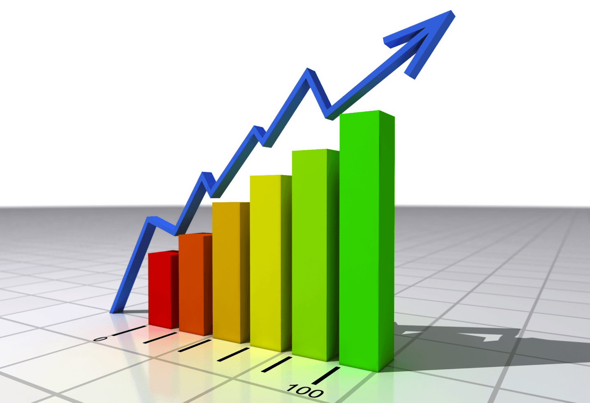
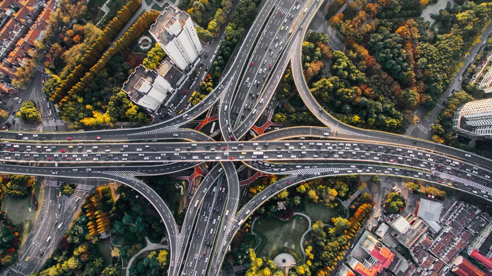
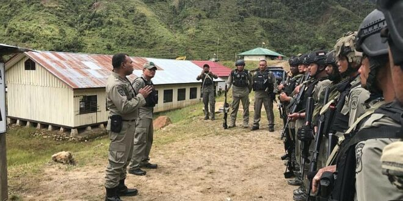
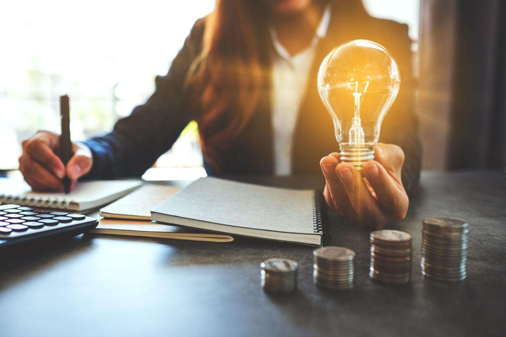
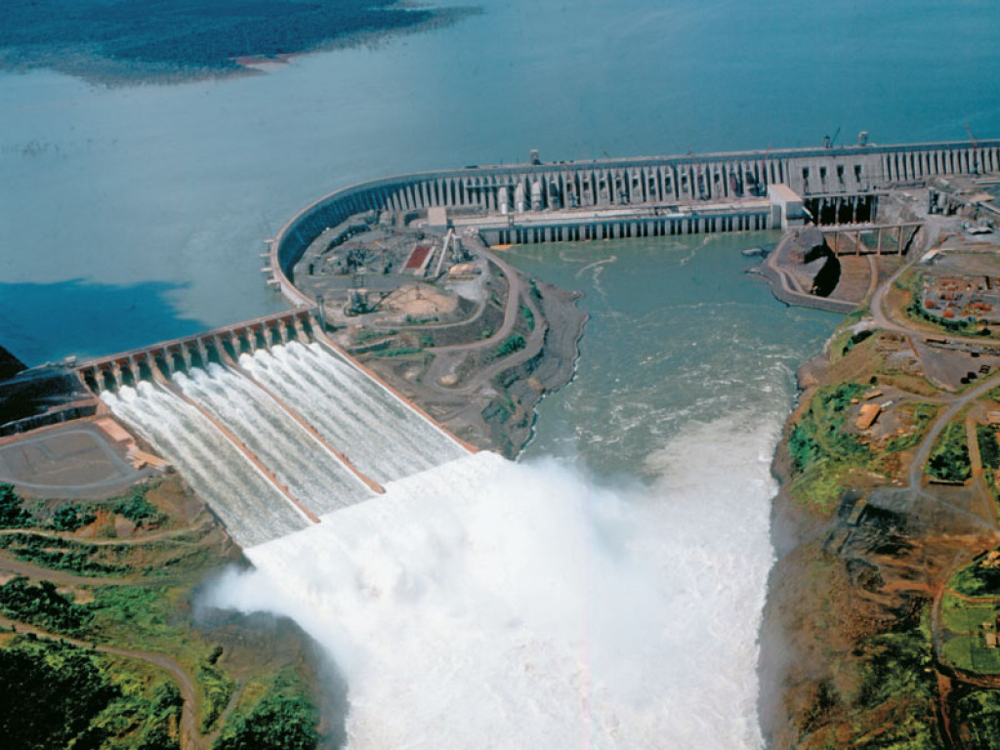

🌎Dampak Secara umum
1. Perkuat Hubungan.💌 Hubungan bilateral yang kuat dapat memperkuat rasa saling percaya
antar
negara
sehingga kerjasama akan berjalan lancar dan lama.
2. Mendorong Pertumbuhan Ekonomi.💸📈 Kesepakatan dalam perdagangan, investasi, dan
pengelolaan energi
meningkatkan pertumbuhan ekonomi Indonesia dan Vietnam.
3. Pengembangan Infrastruktur dan Teknologi.🚘🖥️Kerjasama di bidang energi dan sumber daya
mineral, seperti eksplorasi gas dan energi terbarukan, emmungkinkan adanya perkembangan teknologi dan
infrastruktur bersama.
4. Meningkatkan Ketahanan Pangan dan Energi.🌾🫧 Perjanjian ketahanan pangan dan pemanfaatan
gas
membantu memastikan pasokan energi dan bahan pangan yang berkelanjutan kedua negara.
5. Stabilitas Keamanan di Kawasan Meningkat.🚨🚔 Pemberantasan terorisme dan perdagangan
narkotika,
menciptakan kawasan yang aman bagi negara untuk melakukan perdagangan dan kehidupan sosial.
❤️Dampak pada bangsa Indonesia
1. Pertumbuhan Ekonomi Nasional.💰📊↗️ Dengan target perdagangan bilateral sebesar USD 18
miliar
pada 2028, dan meningkatkan ekspor ke Vietnam, memberikan peluang besar untuk berkembang dan menambah
pendapatan negara. Semakin banyak transaksi bisnis yang akan terjadi, semakin besar keuntungan ekonomi yang
kemungkinan diperoleh Indonesia.
2. Peningkatan Investasi Asing.💡
3. Lapangan Kerja dan Peningkatan Kualitas SDM.👩🏻👨🏻 Kerjasama di berbagai bidang,
menciptakan
lapangan kerja baru di Indonesia dan mendorong pengembangan sumber daya manusia yang kompeten dan berkualitas.
4. Kemajuan Teknologi Energi Terbarukan.🌊🌀 Penggunaan Energi Terbarukan di Indonesia dapat
terus
meningkat sehingga mempercepat transisi energi Indonesia menuju energi ramah lingkungan dan peluang bagi
Indonesia untuk belajar teknologi-teknologi baru.
5. Keamanan dalam Negeri yang Lebih Baik.😇 Upaya bersama-sama dalam bidang keamanan dan
stabilitas, memberikan dampak positif pada keamanan domestik, sehingga mendukung aktivitas produktif dan
efektif.
🙇🏻♀️Dampak pada Masyarakat Indonesia
1. Peningkatan Kesejahteraan Masyarakat melalui Kesempatan Kerja Baru.⭐❇️ Investasi Indonesia
di Vietnam membuka peluang kerja di sektor perdagangan ekspor, manufaktur, dan energi. Selain itu
perusahaan-perusahaan Indonesia yang berkembang juga menciptakan lapangan kerja baru di dalam negeri. Semua ini
membantu masyarakat mendapat pekerjaan dan upah yang layak.
2. Peluang Bisnis dan Kompetisi Sehat.🕴️❤️🩹 Adanya peningkatan daya saing produk lokal.
Maka, semakin banyak peluang bagi produsen Indonesia untuk bersaing dipasar global dan penghasilan yang lebih
besar.
Pengembangan antar industri juga membuka peluang pengusaha lokal untuk terlibat dalam proses produksi sehingga
penghasilan dapat bertambah 💲. Jumlah lapangan kerja dan kapasitas SDM akan semakin meningkat, sehingga
pengangguran dapat berkurang.
3. Lingkungan ekonomi yang aman dan kondusif.🔆Pemberantasan teroris dan narkotika
menciptakan rasa
aman bagi masyarakat dan pedagang. 🧑🏻 Lingkungan yang stabil juga akan menarik lebih banyak investasi asing
yang bisa menambahkan penghasilan masyarakat.
4. Perlindungan terhadap generasi muda.👧🏻👶🏻 Anak-anak generasi muda dapat terhindar dari
pengaruh buruk yang berpotensi merusak diri.
5.Energi yang Berkelanjutan.✳️➡️ Proyek pembangunan mendukung transisi penggunaan energi tidak
terbarukan ke energi ramah lingkungan, sehingga dapat mendukung masyarakat dalam jangka panjang jika
sewaktu-waktu energi tersebut habis.